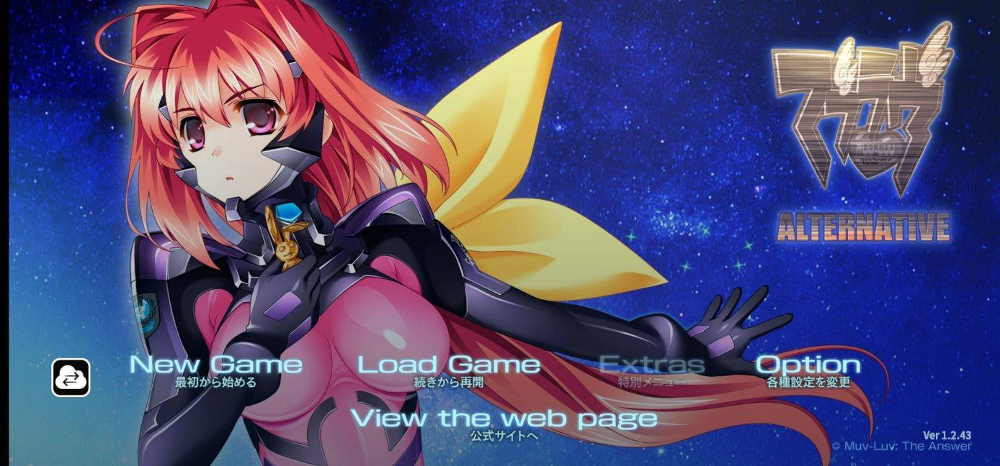
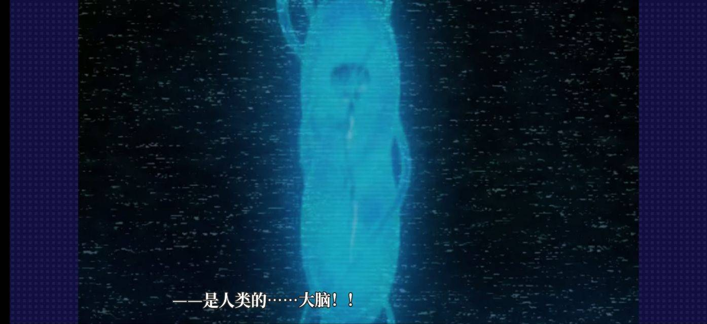
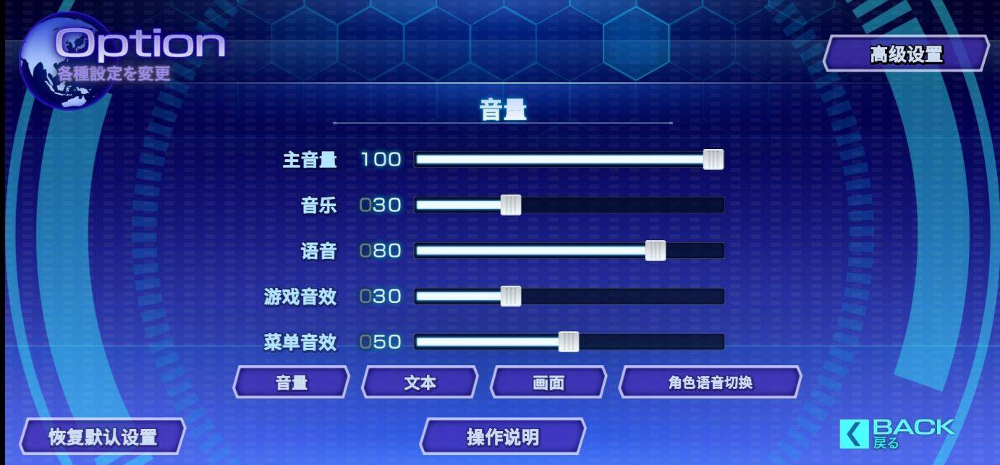

汉化说明
由于Qwen3.8f的免费鸡蛋，主包又有token来汉化游戏了，然后发现这一作居然有内置汉化包，但游戏里没用，直接拉出来用，省了太多的功夫，再做了些文本校对修正，一天就搞定了，不赖😽
注：进游戏后在设置里切换为日语，显示的就是中文。
实机测试跑了半小时没啥问题，如有bug请反馈。



下载地址
已发布在 Touchgal 和 鲲 Galgame，自行查看（点击跳转）。
一起萌 LetMoe直链：点此下载
视频预览：bilibili
翻译细节
这一部其实官方包里就有官中的文本，看懂出来官方原本就有做多语言的打算，但不知道出于何种原因，最后还是没放出来。索性直接拉出来用了，所以总体文本质量会比上一部高一些，但是还有些问题，用ai做了些许校对修正。
未经本作者允许，严禁转载发布！！！
个人汉化作品，仅作学习交流，不得商用，谢谢。